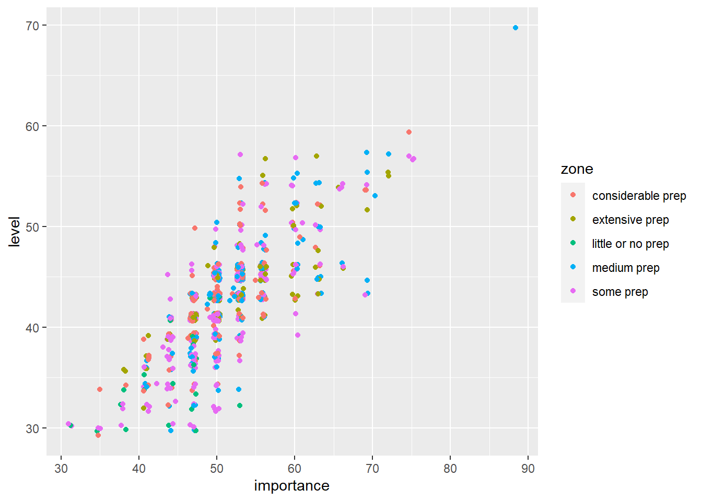
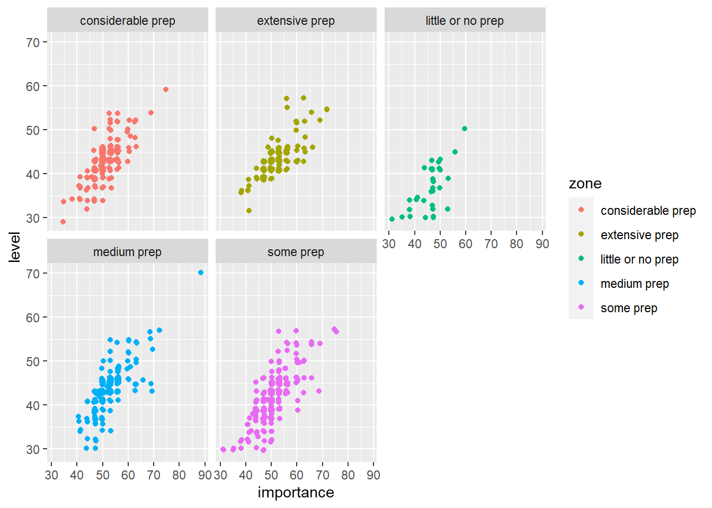
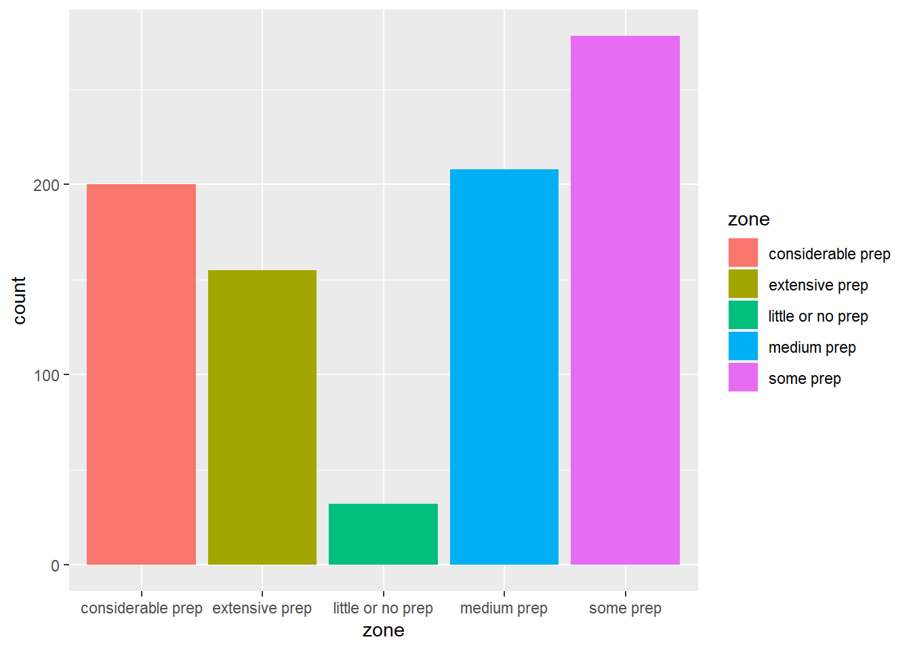

Goal: playing with more data.This data looks at the importance of selective attention in certain occupations.
Note: Data taken from https://www.onetonline.org/find/descriptor/result/1.A.1.g.1
After thoughts: So I thought this csv file I found would be more interesting and have more I could do with it. I thought the job zone maybe categorized the occupations by different types of jobs. However, it only looks at the amount of preparation needed.
library(tidyverse)## -- Attaching packages --------------------------------------- tidyverse 1.3.1 --## v ggplot2 3.3.5 v purrr 0.3.4
## v tibble 3.1.6 v dplyr 1.0.8
## v tidyr 1.2.0 v stringr 1.4.0
## v readr 2.1.2 v forcats 0.5.1## -- Conflicts ------------------------------------------ tidyverse_conflicts() --
## x dplyr::filter() masks stats::filter()
## x dplyr::lag() masks stats::lag()library(dplyr)
library(broom)
library(openintro)## Loading required package: airports## Loading required package: cherryblossom## Loading required package: usdatalibrary(ggplot2)df_data <- read_csv("C:/Users/rgood28/Documents/Data Sci Labs/template_portfolio/selective_attention.csv")## Rows: 873 Columns: 5
## -- Column specification --------------------------------------------------------
## Delimiter: ","
## chr (2): Code, Occupation
## dbl (3): Importance, Level, Job Zone
##
## i Use `spec()` to retrieve the full column specification for this data.
## i Specify the column types or set `show_col_types = FALSE` to quiet this message.colnames(df_data) <- c("importance", "level", "job_zone", "code", "occupation")df_data <- df_data %>%
mutate(zone = case_when(
job_zone == 1 ~ "little or no prep",
job_zone == 2 ~ "some prep",
job_zone == 3 ~ "medium prep",
job_zone == 4 ~ "considerable prep",
job_zone == 5 ~ "extensive prep"))ggplot(data = df_data, mapping = aes(importance, level, color = zone))+
geom_jitter()
ggplot(data = df_data, mapping = aes(importance, level, color = zone))+
geom_jitter()+
facet_wrap(~zone)
ggplot(data = df_data, mapping = aes(zone, fill = zone))+
geom_bar()
model1 <- lm(importance ~ job_zone, data = df_data)
summary(model1)##
## Call:
## lm(formula = importance ~ job_zone, data = df_data)
##
## Residuals:
## Min 1Q Median 3Q Max
## -19.797 -3.129 -0.797 2.203 36.759
##
## Coefficients:
## Estimate Std. Error t value Pr(>|t|)
## (Intercept) 49.9086 0.5767 86.548 < 2e-16 ***
## job_zone 0.4441 0.1696 2.619 0.00898 **
## ---
## Signif. codes: 0 '***' 0.001 '**' 0.01 '*' 0.05 '.' 0.1 ' ' 1
##
## Residual standard error: 5.86 on 871 degrees of freedom
## Multiple R-squared: 0.007811, Adjusted R-squared: 0.006672
## F-statistic: 6.857 on 1 and 871 DF, p-value: 0.008984